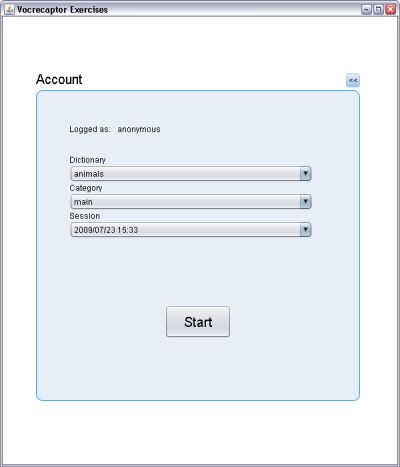

|
|
Vocrecaptor на twitter Vocrecaptor форум |
||
  |
|||
Vocrecaptor Exercises v1.2.0Vocrecaptor Exercises написан на JavaFX, работает на всех платформах и и требует Java Runtime Environment (JRE) версии 6 или выше, а также установленный java плагин для браузера.
|
Что такое Vocrecaptor Exercises?Vocrecaptor Exercises - это JavaFX приложение, позволяющее выполнять упражнения со словами, входящими в состав словарей, созданных при помощи Vocrecaptor Editor и загруженных на сайт Vocrecaptor Web. Благодаря использованию технологии JavaFX приложение может быть запущено как апплет внутри браузера, как десктоп-приложение или мобильное приложение на устройствах, поддерживающих данную технологию. Основная цель Vocrecaptor Exercises - помочь лучше изучить слова из ваших словарей, а также обновить свои знания, периодически выполняя упражнения.Работа с Vocrecaptor Exercises
Запуск упражненийДля запуска упражнений щелкните по кнопкамLaunch applet или Launch application, которые находятся в левой части текущей страницы, в правой
части главной страницы и
в правой части страницы Vocrecaptor Web.Для запуска упражнений в браузере нажмите Launch applet, а для запуска в виде десктоп-приложения - Launch application.Появится форма входа в приложение Login page:
Аккаунт панельНа панели аккаунта вы должны выбрать словарь, с которым хотите работать, а также указать сессию (?) и категорию (?). Для возврата к Панели авторизации нажмите кнопку <<.Выберите желаемый словарь и нажмите кнопку Exercise. Вам предстоит изучать слова группами по 10 слов согласно порядку нахождения их в словаре.
То есть, если выбранная группа состоит из 17 слов, то сначала предстоит выполнить все упражнения для первых 10 слов, а потом для оставшихся 7.
Каждый цикл включает в себя 7 упражнений, идущих в следующем порядке: Карточки, Угадывание определения, Написание,
Выбор определения, Угадывание перевода и Мозаика.Для завершения упражнений и возврата к панели выбора словарей нажмите кнопку <<.
Упражнение "Карточки" Внимательно прочитайте слово (верхняя строка) и перевод (нижняя строка) и постарайтесь их запомнить. После этого нажмите кнопку Next >> (или Пробел при сфокусированной кнопке Next >>.
Появится следующее слово и его перевод. Повторите данную процедуру для каждого слова.
Упражнение "Угадывание определения"Сразу после открытия окна запустится таймер обратного отсчета, и у вас будет 5 секунд на то, чтобы вспомнить определение указанного слова. Если вы помните определение - нажмите кнопку Remember,
таймер будет остановлен, в окне появится определение, и через 1 секунду будет показано следующее слово.
Упражнение "Написание"В этом упражнении вам предстоит вспомнить и написать определение, соответствующее данному переводу. В окне написан перевод и поле ввода, куда необходимо записать определение. Для проверки введенного слова нажмите кнопку Check.
Будет показан правильный ответ (который скроется, как только вы начнете ввод определения). Чтобы дать ответ нажмите Answer.
Если ответ правильный, появится следующее слово, иначе будет сообщено об ошибке и будет необходимо попытаться еще раз.Также обратите внимание, что количество букв, пробелов угадываемого слова показано символами *.
Упражнение "Выбор определения" В этом упражнении перевод расположен в верхней части окна, а варианты определений располагаются в остальной части окна в виде столбца кнопок. Для выбора определения необходимо нажать на соответствующую кнопку. Если пара "слово-перевод" совпадает - появляется следующее слово, иначе ничего не происходит. Попытайтесь снова. Упражнение "Угадывание перевода"Сразу после открытия окна запустится таймер обратного отсчета, и у вас будет 5 секунд на то, чтобы вспомнить перевод указанного слова. Если вы помните перевод - нажмите кнопку Remember,
таймер будет остановлен, в окне появится перевод, и через 1 секунду будет показано следующее слово.
Упражнение "Выбор перевода"В этом упражнении определение расположено в верхней части окна, а варианты перевода располагаются в остальной части окна в виде столбца кнопок. Для выбора перевода необходимо нажать на соответствующую кнопку. Если пара "слово-перевод" совпадает - появляется следующее слово, иначе ничего не происходит. Попытайтесь снова. Упражнение "Мозаика" В левом столбце кнопок в случайном порядке располагаются слова, в правом - переводы. Необходимо нажатием на кнопки из противоположных столбцов удалить все пары слов. Выбираем какое-нибудь слово из, допустим, столбца определений и нажимаем на соответствующую кнопку. Теперь выбираем соответствующее слово из противоположного столбца, в данном случае перевод, и нажимаем на кнопку. Если пара выбрана правильно, то обе кнопки очищаются, и пара считается угаданной После того как все пары будут закрыты упражнения начнутся сначала для следующего десятка слов. В том случае, если данная группа слов была последней, откроется панель выбора словаря, и можно будет начать упражнения для других слов. |
||
| Alexey Peskov, 2007-2009 | |||